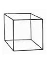

Muntazam ko'pyoqlar (Platon jismlari)
Egular polyhedra, Platonic solids (En). Правильные многогранники (тела Платона) (Ru).
Barcha yoqlari muntazam ko'pburchaklar hisoblangan va barcha ko'pyoqli burchaklari bir-biri bilan teng bo'lgan qavariq ko’pyoqlar. Hammasi bo’lib muntazam ko'pyoqning 5 turi mavjud: tetraedr, kub, oktaedr, dodekoedr, ikosoedr (Jadval va 26-rasmga qarang).
| Poliedr | Yoqlari | Qirralari | Uchlari | Simmetriya |
|---|---|---|---|---|
| Tetraedr | 4 uchburchakli | 6 | 4 uchyoqli | 43m(Td) |
| Kub | 6 kvadratburchakli | 12 | 8 uchyoqli | m3m(Oh) |
| Oktaedr | 8 uchburchakli | 12 | 20 beshyoqli | m3m(Oh) |
| Dodekaedr | 12 beshburchakli | 30 | 4 uchyoqli | m5m(Ih) |
| Ikosaedr | 20 uchburchakli | 30 | 20 uchyoqli | m5m(Ih) |
-
a
-

b
-

c
-
d
-
e
26-rasm. Muntazam ko’pyoqlar: а – тетраэдр; b – kub (geksaedr); c – oktaedr;d – dodekaedr; e– ikosaedr.